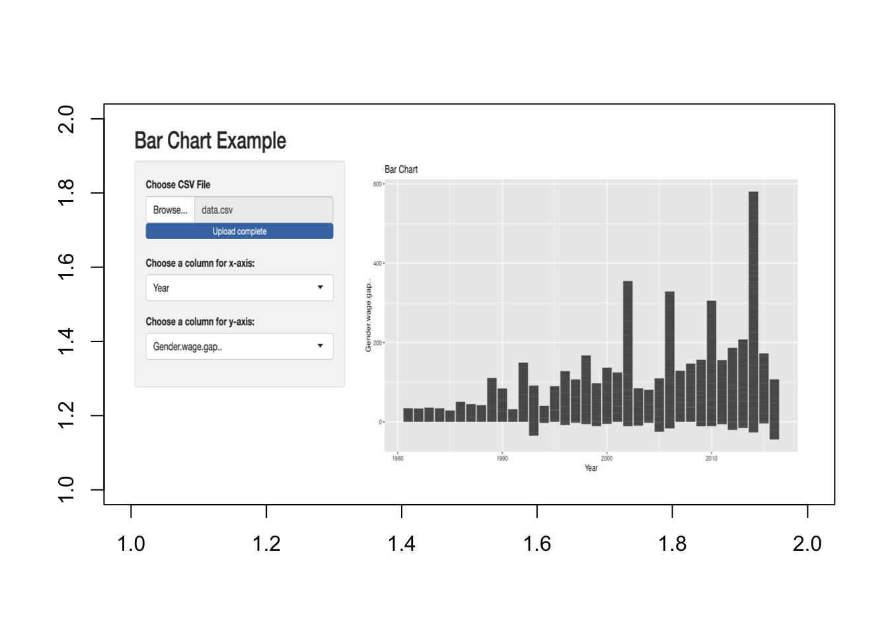

df = read.csv("/Users/halleyzhou/Documents/gendergapinaverage new.csv")halleyxlyn17.github.io
Welcome to Xulin’s Website!
Introduction:
Economic gender inequality has long been a pervasive issue, manifesting in disparities in pay, job opportunities, and wealth accumulation between men and women.
Despite progress in recent decades, these gaps continue to persist, albeit to a lesser extent than before. This dataset delves into the intricate landscape of economic gender inequality, exploring its dimensions.
Visualization &Analysis
First, Here is a scatterplot of the Years against Gender Wage Gap.
library(ggplot2)
data <- read.csv("/Users/halleyzhou/Documents/gendergapinaverage new.csv")
ggplot(data, aes(x=Year, y = Gender.wage.gap..)) +
geom_point(color = "blue", size = 3) +
labs(title = "Scatterplot", x = "Year", y = "Gender Wage Gap") +
theme_minimal() +
theme(
plot.title = element_text(hjust = 0.5, size = 16, face = "bold"),
axis.title = element_text(size = 14),
axis.text = element_text(size = 12),
axis.line = element_line(color = "red"),
panel.grid.major = element_blank(),
panel.grid.minor = element_blank(),
panel.border = element_blank(),
panel.background = element_blank()
)As shown in the scatter plot, the advancement of years and the gender wage gap experiences a downward-sloping trend.
Possible reasons for this include:
- Legistrative measures like equity laws and policies
- Initiatives aimed at promoting work-life balance, such as affordable childcare and parental leave policies
- fostering a culture of diversity and inclusion within organizations
However,as shown in the scatterplot, the gender wage gap varies greatly between countries, and the variation grows steeply as time advances.
The following analysis visualizes this trend:
Scatterplot App:
Bar Chart App:
# Load the png package
library(png)
# Define the path to the image file
image_path <- "/Users/halleyzhou/Documents/WechatIMG322.png" # Replace with the path to your PNG file
# Load the PNG image
image <- readPNG(image_path)
# Plot the image
plot(1:2, type = "n", xlab = "", ylab = "", main = "")
# The rasterImage() function allows you to place the image on the plot
rasterImage(image, 1, 1, 2, 2)
# Load the png package
library(png)
# Define the path to the image file
image_path <- "/Users/halleyzhou/Documents/WechatIMG323.png" # Replace with the path to your PNG file
# Load the PNG image
image <- readPNG(image_path)
# Plot the image
plot(1:2, type = "n", xlab = "", ylab = "", main = "")
# The rasterImage() function allows you to place the image on the plot
rasterImage(image, 1, 1, 2, 2)Source:https://www.kaggle.com/code/adityashakya2454/gender-economic-inequality
Brazil, Argentina, Honduras, and Costa Rica show higher numbers, which could suggest either more accessible data or more significant concerns about gender wage disparities in these countries, prompting increased research and reporting on the subject.
In further analysis of these four countries above, we can see that the wage gap of Brazil, Argentina, Honduras all display a downward sloping trend.
Costa Rica, on the other hand, shows a sharp increase in the gap in recent years. Similar countries like Peru also display such trend.
This indicates that Central America and South American countries have a higher tendency of a wider gender gap.
According to UNU Wider [1], Gender disparities in Latin America are significant. Women’s labor force participation rate is 27 percentage points below that of men; women earn 17% less per hour than men with similar education and experience, and they hold less than 40% of top-level positions.
dados <- data.frame(
country = c("Brazil", "Brazil", "Brazil", "Brazil", "Brazil", "Argentina", "Brazil", "Argentina", "Brazil", "Argentina", "Brazil", "Brazil", "Costa Rica", "Mexico", "Panama", "Uruguay", "Venezuela", "Brazil", "Chile"),
code_country = c("BRA", "BRA", "BRA", "BRA", "BRA", "ARG", "BRA", "ARG", "BRA", "ARG", "BRA", "BRA", "CRI", "MEX", "PAN", "URY", "VEN", "BRA", "CHL"),
year = c(1981, 1982, 1983, 1984, 1985, 1986, 1986, 1987, 1987, 1988, 1988, 1989, 1989, 1989, 1989, 1989, 1989, 1990, 1990),
gap = c(34.21, 33.66, 35.75, 34.04, 28.58, 15.79, 34.69, 12.5, 32.01, 11.31, 30.88, 33.33, 4.55, 20.58, 18.18, 22.22, 11.78, 26.11, 26.45)
)
graphicss <- ggplot(dados, aes(x = year, y = gap, color = country, label = code_country)) +
geom_point(size = 3) +
geom_text(size = 3, vjust = -0.5) +
labs(x = "Year", y = "Gender_Wage_Gap", title = "Scatterplot_2", color = "Countries") +
theme_minimal() +
theme(legend.position = "right")
print(graphicss)
Conclusion:
The ongoing economic gender inequality impacts individuals, communities, and entire economies. Achieving gender equality in the economy is not only a moral duty but is crucial for promoting inclusive growth and long-term development. Empowering women economically boosts their personal well-being and aids in reducing poverty, enhancing productivity, and strengthening social cohesion. Additionally, bridging the gender gap in employment and entrepreneurship reveals untapped opportunities, encouraging innovation and boosting competitiveness in the global market.
Reference:
[1] “UNU-WIDER : Blog : Motherhood and the Gender Gap in Latin America.” UNU WIDER, 12 Aug. 2020, www.wider.unu.edu/publication/motherhood-and-gender-gap-latin-america.
[2] dataset included: